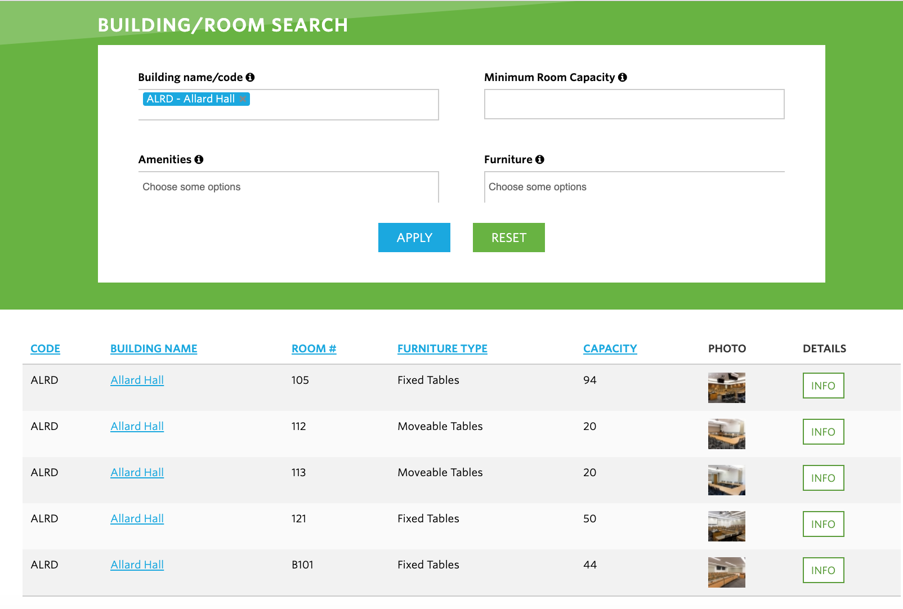

Overview
InsightUBC is a full-stack web application to query real information about courses and classrooms in UBC by entering conditions directly on the UI. It was developed in a team of 3 as part of a UBC's CPSC 310 Software Engineering course.Â
The backend was developed with nodeJS, Javascript and Typescript, with the Frontend using HTML/CSS and Javascript.
the InsightUBC UI
Components
Test Driven Development (TDD)
Following Test Driven Development, we wrote a test suite of black box tests on the entire system before starting any implementation. Tests were written using the Mocha Test framework with Chai Assertions.
Parsing Datasets
Our course data was taken from UBC PAIR in JSON format and our room data was taken from the UBC Building and Classroom website (HTML), with each zip file constituting one dataset. From those zip files, we then had to parse, filter and modify the desired information before placing them into custom objects. Latitude and Longitude values are calculated from the street address, using a Geolocation API.
UBC Building and Classroom website
As databases were not a prerequisite for this course, we were unable to use databases and instead, we saved our objects into data structures which were then written into memory.
Query Builder
We built a query builder to generate and execute a query based on the conditions entered on the UI. Syntactic and Semantic Checking are performed on each query before executing them. The EBNF for the queries are shown below:

EBNF for the Queries
With the queries structured as such:

Sample Query structure
API Endpoints and Frontend UI
REST Endpoints were created for our backend, which was then connected to the Frontend UI. Frontend testing was done with Karma.